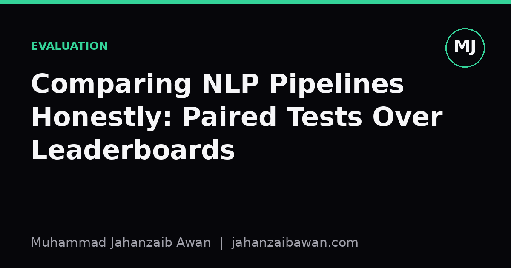

Comparing NLP Pipelines Honestly: Paired Tests Over Leaderboards
A single accuracy number tells you almost nothing about whether one pipeline is genuinely better than another. Paired statistical tests tell you something closer to the truth.

The problem with a single number
I have lost count of how many papers and portfolio projects report something like: pipeline A scored 84.2 per cent, pipeline B scored 85.1 per cent, therefore B wins. That conclusion is almost always too confident. A single aggregate score on a test set is one sample from a distribution of possible outcomes, and that distribution has variance driven by which examples happen to be in the test set, how the model was initialised, and even the order in which batches were shuffled during fine-tuning.
Consider two sentiment classifiers evaluated on a thousand held-out reviews. Pipeline A gets 842 correct, pipeline B gets 851 correct. The naive read is a nine-point improvement, roughly one per cent. But if you retrained each pipeline five times with different random seeds, you might find pipeline A ranges from 838 to 846 and pipeline B ranges from 845 to 856. Suddenly the gap looks far less decisive. Without knowing that spread, you cannot tell if B is a genuine improvement or if you just got a lucky seed.
The deeper issue is that accuracy alone throws away structure. It does not tell you whether the two pipelines are making mistakes on the same examples or on different ones. That structure is exactly what a paired test exploits, and it is why paired comparisons are more informative than comparing two independent-looking numbers on a leaderboard.
Why pairing matters: the same examples, two verdicts
A paired test compares two systems on the identical set of test examples and looks at the pattern of agreement and disagreement, rather than just the totals. The classic tool for this in classification is McNemar's test. You build a small contingency table: how many examples did both pipelines get right, how many did both get wrong, how many did A get right but B get wrong, and how many did B get right but A get wrong. The test then asks whether the discordant pairs, the ones where they disagree, are skewed significantly in one direction.
Here is why that matters with a concrete case. Suppose out of 1000 reviews, 780 are classified correctly by both pipelines and 130 are missed by both. That leaves 90 discordant examples. If 60 of those 90 are cases where B is right and A is wrong, and only 30 are cases where A is right and B is wrong, McNemar's test will likely flag this as a meaningful asymmetry even though the overall accuracy gap looked modest. Conversely, if the split had been 47 versus 43, that nine-point headline gap could easily be noise, because the disagreements are roughly balanced and could flip with a different sample of reviews.
This is a genuinely different question from the one a raw accuracy comparison answers. Raw accuracy asks how many each pipeline got right in total. McNemar's test asks whether, on the specific cases where they disagree, one pipeline is systematically better. That is a much closer match to what we actually want to know: if I swap pipeline A for pipeline B in production, will I reliably do better on the kinds of inputs my users actually send me, or am I just chasing a number that happened to land favourably this one time.
For metrics that are not simple accuracy, such as F1 score, BLEU, or ROUGE, McNemar's test does not directly apply because these are not per-example binary outcomes in the same way. This is where paired bootstrap resampling earns its place.

Paired bootstrap resampling for continuous metrics
Paired bootstrap works by repeatedly resampling the test set with replacement, computing both pipelines' scores on each resampled set, and recording the difference. Do this several thousand times and you get an empirical distribution of score differences. If, say, 97 per cent of those resampled differences favour pipeline B, you have reasonably strong evidence that B is better, not just lucky on the original test set.
Walk through a worked example with a summarisation task scored by ROUGE-L. On the original 500-document test set, pipeline A scores 0.41 and pipeline B scores 0.43, a two-point gap. You resample 500 documents with replacement 2000 times. In each resample, you recompute ROUGE-L for both pipelines on that same resampled set and record the difference, B minus A. If the resulting distribution of differences has, say, 94 per cent of its mass above zero, that is a fairly convincing signal. If instead only 58 per cent of resamples favour B, the apparent two-point gap is mostly an artefact of which documents landed in the original test set, and I would not trust it to generalise.
The crucial detail, and the one people most often get wrong, is that the resampling must be paired. You resample a set of document indices once per iteration and apply that same set of indices to both pipelines. If you resample independently for each pipeline, you introduce extra noise that has nothing to do with the actual comparison and you lose the benefit of pairing entirely. The whole point is to hold the source of document-level variance constant and isolate the pipeline-level difference.
This approach generalises well beyond summarisation. It works for any metric computed over a test set, including exact match for question answering, word error rate for speech transcription, or span-level F1 for named entity recognition. The only requirement is that you can recompute the metric on arbitrary resamples of the same underlying examples for both systems.
Making this practical
None of this requires exotic tooling. Store per-example predictions, not just aggregate scores, for every pipeline you evaluate. Keep a fixed, leakage-checked test set and never let it influence model selection or hyperparameter tuning. When comparing two pipelines, run McNemar's test for classification tasks and paired bootstrap resampling for continuous metrics, and report the p-value or confidence interval alongside the headline number rather than instead of it.
It is also worth running multiple training seeds where compute allows, since seed variance and test-set sampling variance are separate sources of uncertainty and both matter. A pipeline that wins a paired test against one seed of its competitor but loses against another seed is not a settled comparison, it is a sign you need wider evaluation before making a claim.
The honest takeaway is simple: treat a leaderboard score as a starting point for investigation, not a conclusion. The question worth asking is not which number is bigger, but whether the difference would survive being tested against its own uncertainty.